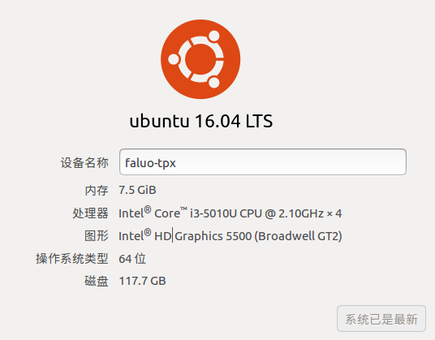
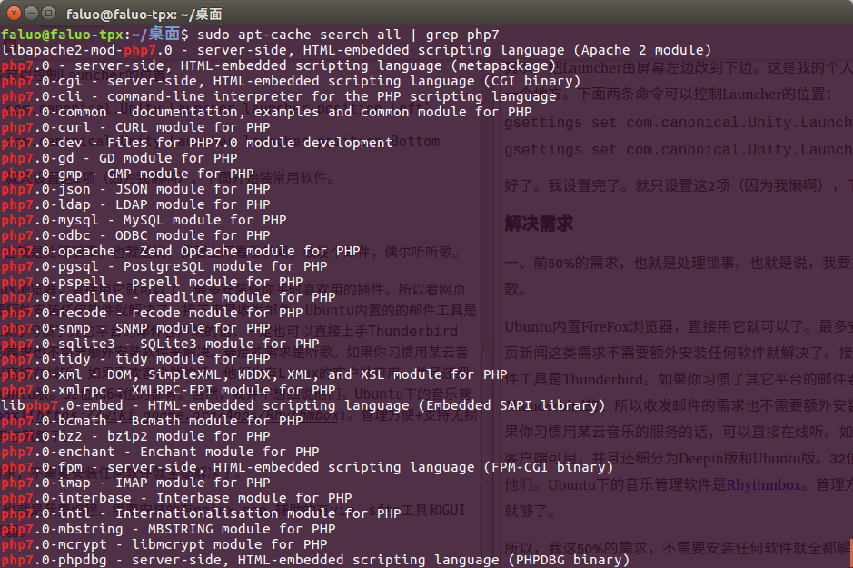

“开箱即用”的Ubuntu
昨天终于把我的Thinkpad X250低配版的系统由原来的Ubuntu15.10升级为16.04LTS了。虽然到现在为止新系统只体验了2天，但给我的感觉非常棒，需要用到的软件在Linux下也都有替代版，并且简单易用。这么说吧，这次安装Ubuntu，基本上也让我体验到了Mac下的“开箱即用”的感觉。
我的机器配置并不高，是X250的低配版，自己换了条8G的内存。

因为懒，所以哪怕是用Linux，也不想折腾（不，不要跟我提什么不想折腾就去用windows）。我平时用电脑做的事也非常少，50%时间用来处理锁事（看新闻，收发邮件等等），另50%用来编程。我实在不想把工作中的事拖到生活中，所以工作时写的项目，java,svn,eclipse,maven,mysql,tomcat等等这些东西是绝对不许出现在自己的电脑中的。我这里所说的编程，只是写写php，js，css，用git来管理一下版本，用nginx跑自己的项目臭美一下而已。所以你看，我的需求非常少。用Ubuntu来满足我这点小需求，简直太轻松了。现在就来看看我装好系统后设置了什么，装了什么软件吧。
设置
首先，解决一下经常断WIFI的问题。在我的机器上，无论是15.10还是16.04,WIFI每过一段时间就会掉线。不知道在别的机器上是否也如此，于是我百度了一下，找到了下面的这个方案，解决了这个问题：1、直接打开终端，输入下面的命令：
sudo vim /etc/ppp/options/
2、把lcp-echo-failure和lcp-echo-interval的值都改成30。
其次，把Launcher由屏幕左边改到下边。这是我的个人习惯，不喜欢把Launcher长期固定在一个地方。下面两条命令可以控制Launcher的位置：
gsettings set com.canonical.Unity.Launcher launcher-position Left
gsettings set com.canonical.Unity.Launcher launcher-position Bottom
最后，安装五笔输入法。不知道为啥我装好系统后发现只有全拼，没有五笔输入法。一下子觉得不会打字了。可以在终端中运行这条命令把它装回来：
sudo apt-get install fcitx-table-wubi
好了。我设置完了。就只设置这3项。其它如驱动啊电源管理啥的，一概不管，就用默认的（因为我懒啊）。下面开始装常用软件。
解决需求
一、前50%的需求，也就是处理锁事。主要是上网看看新闻，收发邮件，偶尔听听歌。
Ubuntu内置FireFox浏览器，直接用它就可以了。最多安装些你平时喜欢用的插件。所以看网页新闻这类需求不需要额外安装任何软件就解决了。接下来是收发邮件。Ubuntu内置的的邮件工具是Thunderbird。如果你习惯了其它平台的邮件客户端的话，一定也可以直接上手Thunderbird。所以收发邮件的需求也不需要额外安装软件来解决。最后的需求是听歌。如果你习惯用某云音乐的服务的话，可以直接在线听。如果喜欢客户端，他们也有Linux的客户端可用，并且还细分为Deepin版和Ubuntu版。32位和64位的都有。Ubuntu自带的音乐管理软件是Rhythmbox。管理方便+支持无损+开源+各种插件，用它就够了。
所以，我这50%的需求，不需要安装任何软件就全都解决了。
二、后50%的需求，即我对编程的需求。需要安装的软件有git,nginx,php,辅助的有vim，sftp工具和GUI下轻量级的代码编辑器。
先来解决nginx和php。很简单，apt-get就好了，想必大家都知道。vim也可以这么解决。并且现在可以通过apt-get来安装php7了。

然后，来解决sftp。也很简单，推荐FileZilla。除了Linux外，还有OSX和Windows版，挺有名的软件，用起来也很方便。可以在官网下载，也可以直接在Ubuntu的软件中心搜索安装。
最后，安装一个GUI下的编辑器。我用的是微软的vsCode。直接去官网下deb包安装就行了。我在Mac下用的也是它，所以Linux下仍然选它。
其实从我开始安装系统，到把这几个常用软件安装好，一共也就用了40分钟左右的时间。还是很简单的，没多做啥设置也没安太多东西。系统自带的软件本身品质就不错，可以满足绝大部分的日常需求，也不需要担心流氓软件。不知道你有没有从中体验到“开箱即用”的感觉呢？
(Fin.)